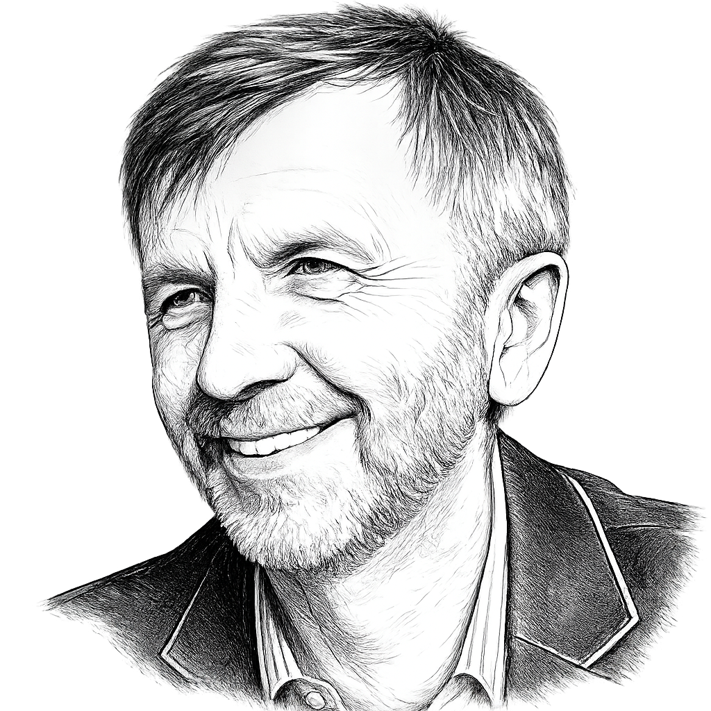
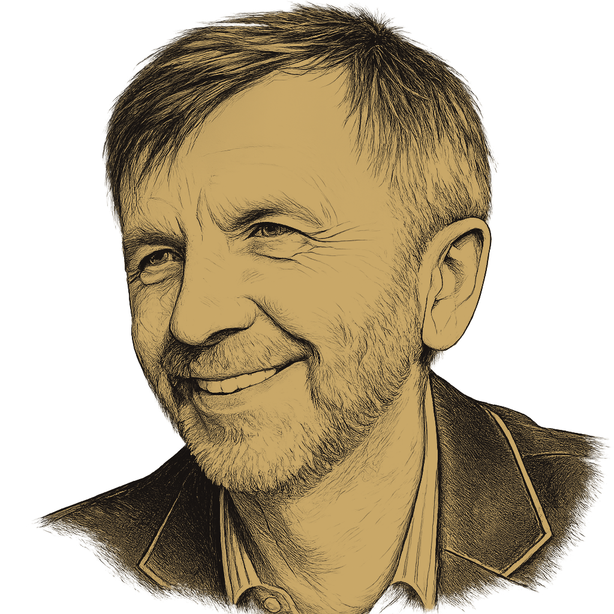
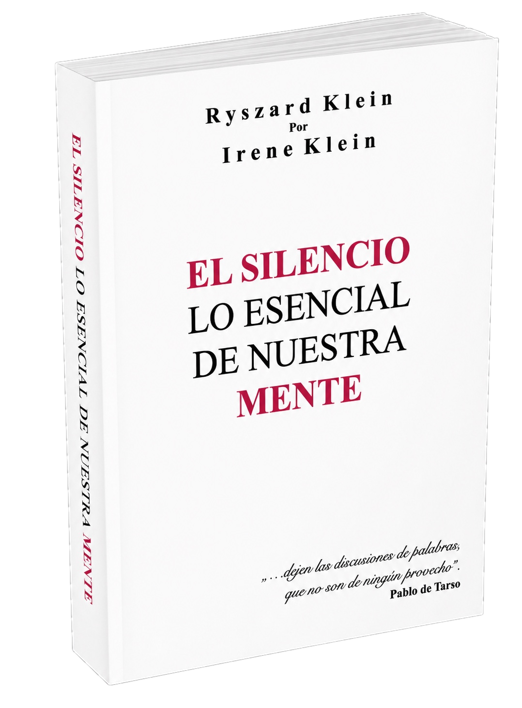
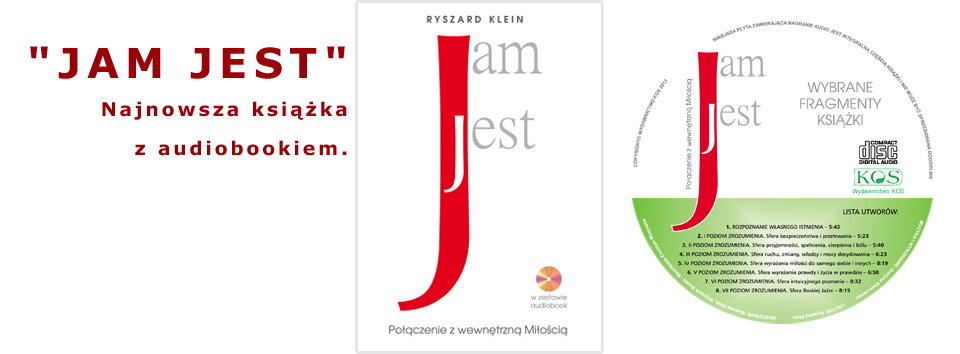
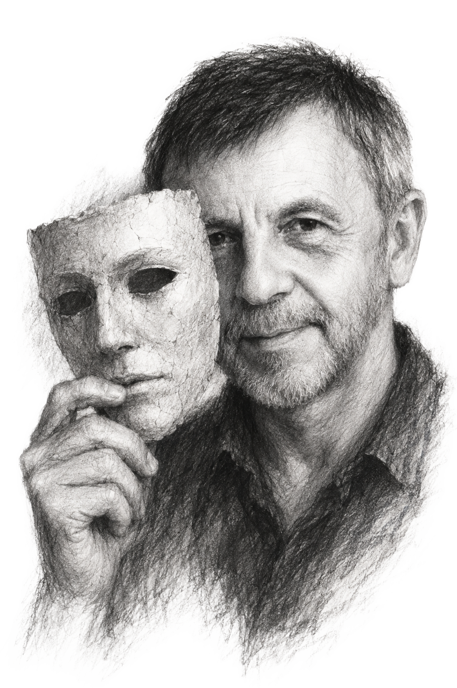

Pasja
Cisza · Samopoznanie · Wolność
Cykl pięciu książek — Droga Ciszy


Sentencja na dziś
— Szczelina decyzji. Dojrzewanie umysłu do wolności
Serdecznie zapraszam do czytania moich książek. Są one zapisem moich poszukiwań, pytań i refleksji nad człowiekiem, umysłem, świadomością i wolnością wyboru.
Od wielu lat fascynuje mnie ludzka droga: to, jak próbujemy zrozumieć siebie, własne decyzje i mechanizmy, które nami kierują. Szczególnie porusza mnie pytanie, na ile naprawdę potrafimy korzystać z wolnej woli i czym jest zdrowy rozsądek, skoro każdy z nas patrzy na świat z własnej perspektywy.
Pisanie jest dla mnie sposobem porządkowania myśli, lepszego rozumienia siebie i innych, a także utrzymywania dystansu do rzeczywistości. Korzystam z doświadczeń mojego długiego życia, ale staram się opierać przede wszystkim na uważności, prostocie i zdrowym rozsądku.
Interesuje mnie ludzka kondycja: to, jak łatwo uznajemy własne przekonania za oczywiste i jak trudno czasem zobaczyć coś szerzej.
Jeśli te tematy są Ci bliskie, zapraszam do lektury, kontaktu i wspólnych rozmów. Będzie mi bardzo miło, jeśli zechcesz razem ze mną zatrzymać się przy tych pytaniach.
Każdy z nas kroczy swoją drogą.
Każdy sam odkrywa własny potencjał, piękno i moc.
Czasem jedna rozmowa, wspólna refleksja albo dobrze postawione pytanie potrafią otworzyć w nas nową przestrzeń.
Zapraszam do lektury, refleksji i kontaktu.
— Droga Ciszy —
„Droga Ciszy” to autorski cykl pięciu książek, które wyrastają z jednej potrzeby: lepiej zrozumieć człowieka, jego umysł, świadomość i drogę do wewnętrznej wolności.
Każda z książek ma własną formę, własny rytm i osobny sposób prowadzenia czytelnika. Jedna bardziej przypomina pracę z umysłem, inna poetycką afirmację, kolejna wewnętrzny dialog, jeszcze inna duchowo-psychologiczną refleksję nad szczęściem, spełnieniem i sensem życia. Razem tworzą jedną drogę poszukiwań.
Wszystkie wyrastają z tych samych pytań: kim jestem, czym jest świadomość, jak działa ludzki umysł, ile w naszych wyborach jest wolności, a ile ukrytych uwarunkowań, lęków, przyzwyczajeń i przekonań. To pytania, które od lat prowadzą mnie przez życie i które w każdej książce wracają w innej postaci.
„Droga Ciszy” jest zapisem tych poszukiwań. Drogą od chaosu myśli ku większej uważności. Od iluzji i nieświadomych schematów ku prostszemu, bardziej trzeźwemu widzeniu siebie. Od potrzeby kontroli ku zaufaniu. Od zagubienia w świecie zewnętrznym ku spokojniejszemu kontaktowi z własnym wnętrzem.
Głos czytelników i słuchaczy
“
To książka o potrzebie zatrzymania się i uważniejszego spojrzenia na własny umysł. Powstała z pytania, jak odnaleźć spokój pośród natłoku myśli, przyzwyczajeń, lęków i wyobrażeń, które często bierzemy za prawdę o sobie i świecie.
Nie jest to zbiór łatwych recept ani gotowych odpowiedzi. Raczej zaproszenie do spokojnej pracy nad sobą, do obserwacji własnych reakcji, myśli i schematów, które wpływają na nasze decyzje.
Książka łączy refleksję nad człowiekiem z konkretnymi ćwiczeniami uważności, obserwacji świata, siebie oraz własnych myśli. Może być pomocą dla tych, którzy chcą lepiej poznać siebie, odzyskać większy wewnętrzny porządek i uczyć się twardo stąpać po ziemi, kierując się prostym, zdrowym rozsądkiem.
Cisza. Esencja naszego umysłu jest pierwszą częścią cyklu Droga Ciszy.
Dostępność: u autora: druk PL/ES, oraz e-booki PL/ES.
Więcej
Rozwinięcie pozostaje częścią tej samej książki i prowadzi dalej jej główny nurt.
Nie trzeba być wnikliwym obserwatorem, by zauważyć, że każdy człowiek koncentruje się głównie na samym sobie. Im bardziej jesteśmy zanurzeni w tym osobistym kręgu, tym mocniej bronimy własnych racji, a zarazem oddalamy się od możliwości obiektywnego sądu i spokojniejszego widzenia rzeczywistości.
Trudność pracy nad sobą nie wynika wyłącznie z samych zagadnień, lecz z ukrytego w nas lęku przed zmianą i utratą misternie budowanej tożsamości. Właśnie dlatego pytanie o umysł, o iluzję i o prawdę wymaga odwagi, cierpliwości oraz gotowości do samoobserwacji.
W tej książce Cisza nie jest pustką, lecz pełną obecnością. Jest przestrzenią, w której człowiek może uczyć się widzieć wyraźniej, rozluźniać własne iluzje i stopniowo dojrzewać do bardziej wolnego, świadomego życia.
Przekład hiszpański
Irena Klein i hiszpański przekład książki „Cisza. Esencja naszego umysłu”

Książka „Cisza. Esencja naszego umysłu" została przełożona na język hiszpański przez Irenę Klein — pisarkę, autorkę wielu książek, psychoterapeutkę mieszkającą na stałe w Argentynie, a prywatnie moją siostrę.
Praca nad przekładem trwała ponad rok i wymagała nie tylko biegłości językowej, lecz także wyjątkowej wrażliwości na duchowy, psychologiczny i refleksyjny charakter książki. Dzięki zaangażowaniu Ireny Klein argentyńskie wydanie ukazało się w roku 2014 pod tytułem „Silencio. Lo esencial de nuestra mente".
Po drugim polskim wydaniu książki, opublikowanym nakładem Wydawnictwa KOS, Irena Klein podjęła się ponownie pracy nad hiszpańską wersją tekstu. Również tym razem był to proces wymagający dużej pracy, za którą z tego miejsca serdecznie dziękuję.
Drugie wydanie hiszpańskie ukazało się w Argentynie w roku 2024 nakładem Editorial Guadalupe. Dzięki tej pracy „Cisza. Esencja naszego umysłu" doczekała się dwóch wydań w Polsce oraz dwóch wydań w Argentynie.
Osoby zainteresowane lekturą mogą nabyć książkę bezpośrednio u autora — w wersji drukowanej lub jako e-book. Polskie i hiszpańskie wydanie tworzą także wyjątkowo ciekawą propozycję dla lingwistów, tłumaczy oraz osób uczących się języka hiszpańskiego, pozwalając na równoległą lekturę oryginału i przekładu.
Refleksje
— Cisza. Esencja naszego umysłu
Książka przeznaczona jest dla osób, które chcą wzmocnić wiarę w siebie, lepiej rozpoznać własną wartość i ugruntować poczucie wewnętrznej mocy.
Autor prowadzi czytelnika przez siedem poziomów energetyczno-psychologicznych, ukazując różne sfery życia człowieka: jego ciało, emocje, wolę, serce, wyrażanie siebie, intuicję i duchową świadomość. Każdy z tych poziomów staje się zaproszeniem do spokojnego zatrzymania się przy sobie i do zobaczenia, co nas ogranicza, a co może stać się źródłem większej równowagi.
Książka ma charakter refleksyjny i poetycki. Warto czytać ją powoli, zdanie po zdaniu, pozwalając, by zawarte w niej treści i afirmacje pracowały w nas stopniowo. Dodatkowym elementem książki są znaki runiczne, które otwierają wybrane słowa i nadają im głębszy, symboliczny wymiar.
Jam jest jest drugą częścią cyklu Droga Ciszy.
Dostępność: u autora: e-booki PL/EN, druk: KOS.
Więcej
Rozwinięcie pozostaje w obrębie tej samej książki i zachowuje jej poetycki rytm.
„Jam Jest” prowadzi czytelnika ku rozpoznaniu własnej, najgłębszej przestrzeni. To opowieść o prawach potrzebnych, by doświadczać życia pełniej i spokojniej, a zarazem o drodze wychodzenia poza ograniczenia budowane przez lęk, przyzwyczajenia i błędne przekonania o sobie.
Książkę warto czytać powoli, zdanie po zdaniu, pozwalając treściom pracować w człowieku jak cicha praktyka uważności. Jej wymiar terapeutyczny i duchowy nie polega na pośpiechu, lecz na wewnętrznym rozpoznawaniu tego, co naprawdę wzmacnia nasze „Jam Jest”.
Marta Kaczmarczyk · psycholog i psychoterapeuta
Przekład angielski
Maryla Ros i angielski przekład książki „Jam Jest”
W roku 2013 wydałem książkę z audiobookiem zatytułowaną „Jam Jest". Po wyczerpaniu nakładu, w roku 2015 ukazało się jej drugie, poprawione — zarówno w wersji drukowanej, jak i w postaci e-booka.
Szczególne znaczenie w pracy nad tym wydaniem miała Maryla Ros — psychoterapeutka, poetka, liderka InterPlay, mieszkająca na stałe w Australii. Dla mnie osobiście jest kimś więcej niż konsultantką czy tłumaczką. Jest duchową mentorką i Mistrzynią, osobą, z którą każde spotkanie wnosiło do mojego życia nowe światło, głębię i większe zrozumienie.
Praca nad drugim wydaniem trwała blisko rok i odbywała się regularnie przez Skype'a. Były to długie godziny rozmów, wspólnego namysłu, dopracowywania sensów, rytmu i duchowego przesłania książki. Z tego miejsca składam Maryli Ros głębokie podziękowanie za jej ogromną pracę i duchową obecność.
Po zakończeniu prac nad drugim wydaniem rozpoczął się kolejny etap — przekład książki na język angielski. Także ta praca trwała blisko rok i wymagała nie tylko biegłości językowej, lecz przede wszystkim głębokiego rozumienia duchowego, psychologicznego i medytacyjnego charakteru.
Angielska wersja książki ukazała się pod tytułem „I Am" i została wydana w formie e-booka.
„Jam Jest" dostępna jest bezpośrednio u autora w wersji drukowanej oraz jako e-book. Angielski przekład „I Am" dostępny jest w formie e-booka. Obie wersje mogą być także ciekawą propozycją do równoległej lektury po polsku i angielsku, zwłaszcza dla osób zainteresowanych językiem, przekładem i poetyckim rytmem tekstu.
Audiobook
Grażyna Klein — muzyczna przestrzeń audiobooka „Jam Jest”
Osobnym i bardzo ważnym etapem była praca nad muzyką do audiobooka. W tym miejscu z ogromną wdzięcznością dziękuję mojej córce, Grażynie Klein — muzykoterapeutce, która stworzyła wyjątkową, wielogłosową kompozycję towarzyszącą tekstowi.
Jej muzyka stała się dla tej książki czymś więcej niż tłem dźwiękowym. Była przestrzenią, w której słowo mogło głębiej wybrzmieć — muzycznym oddechem tekstu, jego wewnętrznym nurtem i subtelnym dopełnieniem.
Było dla mnie wielkim przeżyciem duchowym czytać „Jam Jest" do muzyki stworzonej przez Grażynę. Dziękuję jej nie tylko za tę kompozycję, lecz także za dziesiątki wspólnych przedsięwzięć artystycznych, koncertów i wykładów, które pozostają dla mnie ważną częścią naszej rodzinnej i twórczej historii.
W audiobooku ważną rolę odgrywa symbolika centrów energetycznych człowieka, nazywanych czakrami, oraz energia run. W książce runy przemówiły do mnie przede wszystkim w wymiarze psychologicznym i duchowym. Starałem się wydobyć z nich to, co najgłębsze: ich ukryty sens, archetypowy obraz i wewnętrzne przesłanie.
Muzyka Grażyny Klein została głęboko powiązana z tą przestrzenią — z energią czakr, symboliką run i medytacyjnym charakterem tekstu. Dzięki temu w roku 2013 powstał audiobook wydany na płycie kompaktowej. Dziś nagrania dostępne są również w serwisie YouTube.

To książka o wewnętrznym dialogu człowieka z Bogiem, ale także z samym sobą — z własnymi wątpliwościami, tęsknotą, lękiem, potrzebą miłości i pragnieniem zrozumienia, kim naprawdę jest.
Z jednej strony pojawia się w niej ludzkie rozdarcie, samotność i niepewność. Z drugiej — cichy głos Najwyższej Jaźni, głos miłości, który przypomina o wartości życia, godności człowieka i cieple Bożego spojrzenia obecnego w nas samych.
Książka pomaga przyjrzeć się poczuciu samotności, odróżnić miłość własną od egoizmu i łagodniej spojrzeć na siebie. Choć napisana jest językiem poetyckim i pełnym ciepła, zawiera również odniesienia psychologiczne oraz refleksje porządkujące nasze myślenie o sobie, relacjach i duchowości.
Ważnym motywem książki jest pytanie: Kim jestem? Nie jako gotowa odpowiedź, lecz jako droga do głębszego rozpoznania siebie, miłości i sensu. Całość wzbogacają grafiki ukazujące ludzkie pytania, wątpliwości i wewnętrzne poszukiwania.
Spojrzenie Boga. Bliźniacze Dusze jest trzecią częścią cyklu Droga Ciszy.
Dostępność: druk: Wydawnictwo KOS.
Więcej
Rozwinięcie pozostaje naturalnym ciągiem dalszym tej samej książki.
Książka przedstawia człowieka prowadzącego wewnętrzny dialog: z jednej strony pełen wątpliwości, z drugiej wsłuchujący się w cichy głos Najwyższej Jaźni. Dzięki temu przypomina, jak wielką wartością jest życie i jak ważna bywa nieustanna próba zrozumienia siebie.
Choć posługuje się językiem poetyckim i ciepłym, porządkuje myślenie, oczyszcza umysł z iluzji i pomaga łagodniej spojrzeć na własne pytania, relacje i tęsknoty.
Maria Mikulska
To książka o szczęściu, spełnieniu i ludzkim potencjale, pisana z perspektywy osobistego doświadczenia, duchowej refleksji, psychologii i zdrowego rozsądku.
Autor podejmuje pytania o to, jak żyć w świecie pełnym sprzeczności, co pomaga człowiekowi rozkwitać, a co oddala go od wewnętrznej równowagi. Nie szuka prostej recepty na szczęście, lecz pokazuje drogę uważności, wdzięczności, świadomej obecności i coraz głębszego rozumienia siebie.
Książka nawiązuje do starożytnej mądrości Tao Te Ching oraz do tekstów biblijnych, zestawiając je ze współczesnym spojrzeniem na człowieka, jego umysł, duchowość i codzienne wybory. Składa się z osiemdziesięciu jeden krótkich rozważań, nazwanych Księgami, z których każde zawiera poetycki wstęp, komentarz oraz myśl podsumowującą.
To zaproszenie do spokojnej lektury, refleksji nad własnym życiem i odkrywania szczęścia, które wyrasta nie tyle z zewnętrznych okoliczności, ile z kontaktu z samym sobą, Ciszą i Źródłem.
Ścieżki spełnionego życia są czwartą częscią cyklu Droga Ciszy.
Dostępność: u autora: książka drukowana oraz e-book.
Aforyzmy
— Ścieżki spełnionego życia
To książka o człowieku, który pragnie wolności, ale coraz wyraźniej odkrywa, jak wiele jego decyzji rodzi się z ukrytych schematów, lęków, przyzwyczajeń i nieświadomych impulsów.
Autor przygląda się mechanizmom ludzkiego umysłu, ego, cieniom działającym z ukrycia oraz scenariuszom, które często przejmują ster naszego życia. Prowadzi czytelnika ku samoobserwacji, uważności i większemu samostanowieniu.
Tytułowa szczelina decyzji oznacza tę krótką przestrzeń pomiędzy impulsem a reakcją, w której może pojawić się świadomy wybór. To właśnie tam zaczyna się dojrzewanie do wolności — nie jako jednorazowe przebudzenie, lecz jako codzienna praktyka rozpoznawania siebie.
Książka łączy refleksję psychologiczną, duchową i egzystencjalną. Jest zaproszeniem do spokojnego spojrzenia na własny umysł, własne wybory i drogę, na której człowiek stopniowo uczy się żyć bardziej świadomie.
Szczelina decyzji. Dojrzewanie umysłu do wolności jest piątą częścią cyklu Droga Ciszy.
W przygotowaniu

Ryszard Klein
Nauczyciel. Artysta. Autor cyklu książek o ludzkim umyśle i drodze do wolności.
O mnie
Odkąd pamiętam, zadawałem pytania o sens życia, naturę istnienia i tajemnicę ludzkiego umysłu. Z czasem zrozumiałem, że umiejętne zadawanie pytań jest często bardziej konstruktywne niż próba udzielania odpowiedzi.
Moje doświadczenie życiowe zrodziło we mnie potrzebę pisania. Z zawodu jestem muzykiem, ale najbardziej fascynuje mnie ludzki umysł, świadomość i droga człowieka ku większej wolności wewnętrznej. Patrząc szerzej na historię i współczesny świat, widać, jak mocno naszymi wyborami kierują uwarunkowania, lęki, pragnienia i zbiorowe scenariusze. Właśnie dlatego tak bardzo interesuje mnie droga od nieświadomego działania ku bardziej świadomemu wyborowi.
Moje książki są zapisem tych poszukiwań. Powstały z życia, z doświadczeń, z pracy z ludźmi, z muzyki, z ciszy i z pytań, które przez wiele lat prowadziły mnie w głąb siebie.
Pasja
Pasja
Pasja
Miałem w życiu to szczęście, że przeszedłem przez wiele różnych doświadczeń. Pracowałem w różnych miejscach, spotykałem wielu ludzi, nauczałem, grałem, prowadziłem zespoły, kierowałem instytucjami, zakładałem rodzinę, przeżywałem trudne decyzje i zaczynałem od nowa.
Dziś widzę, że ta różnorodność stała się źródłem refleksji. Dzięki niej mogłem lepiej zobaczyć siebie w różnych sytuacjach życiowych: własne reakcje, wybory i decyzje, które na poszczególnych etapach wydawały się jedyne i słuszne. Z czasem zrozumiałem, jak wiele potrafią zmienić dystans, dojrzewanie i spokojna refleksja.
Moje doświadczenie budowało się w bardzo różnych miejscach. Pracowałem w kopalni, służyłem w Marynarce Wojennej i przeżyłem czas stanu wojennego. Przez wiele lat byłem związany ze szkolnictwem, muzyką i kulturą. Uczyłem, prowadziłem zespoły, kierowałem instytucjami kultury, organizowałem koncerty, festiwale i wernisaże. Ważnym rozdziałem mojego życia była również gra na organach kościelnych. Przez ponad czterdzieści lat towarzyszyłem muzyką ludziom w chwilach modlitwy, skupienia, radości i pożegnania.
Szczególne miejsce w moim życiu zajmuje rodzina. Jestem ojcem czworga dzieci i dziadkiem siedmiorga wnuków. Życie rodzinne, ze wszystkimi swoimi radościami, trudnościami, pytaniami i lekcjami, stało się jednym z najważniejszych źródeł mojego rozumienia człowieka. To właśnie bliskie relacje najczęściej pokazują nam, kim naprawdę jesteśmy, czego nie rozumiemy i czego wciąż musimy się uczyć.
W dojrzałym wieku odważyłem się rozpocząć nowy rozdział życia. Zrezygnowałem z części zawodowych obowiązków, zamieszkałem bliżej gór i mogłem pełniej poświęcić się pisaniu, pracy wewnętrznej, turystyce i prostemu życiu. Tatry i góry od lat były dla mnie miejscem oddechu, ciszy i powrotu do siebie.
Z czasem wszystkie te doświadczenia zaczęły układać się w jedną całość. Wszystko to stało się fundamentem moich książek.
Piszę o człowieku, bo sam wciąż próbuję człowieka zrozumieć.
Piszę o umyśle, bo widzę, jak mocno potrafi nami kierować.
Piszę o wolności, bo wierzę, że można dojrzewać do bardziej świadomego wyboru.
Napisałem pięć książek. Część z nich doczekała się kolejnych wydań, tłumaczeń na języki obce i ważnych dla mnie wyróżnień. Szczegółowe informacje o książkach zamieszczam w osobnej zakładce.
Pisanie jest dla mnie przede wszystkim osobistą drogą refleksji. Piszę, bo sam tego potrzebuję. W pisaniu porządkuję myśli, pogłębiam świadomość, odzyskuję wewnętrzną równowagę i lepiej rozumiem siebie. Jest to dla mnie forma medytacji, uważności i cichej rozmowy z samym sobą.
Opowieść autobiograficzna
Porąbka, dnia 18. II 2021 rok.
Media
Kontakt
Zapraszam do lektury, refleksji i kontaktu. Czasem jedna rozmowa, wspólna refleksja albo dobrze postawione pytanie potrafią otworzyć w nas nową przestrzeń.
Telefon
Napisz do mnie